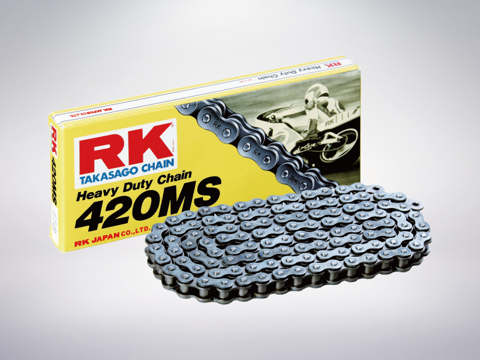
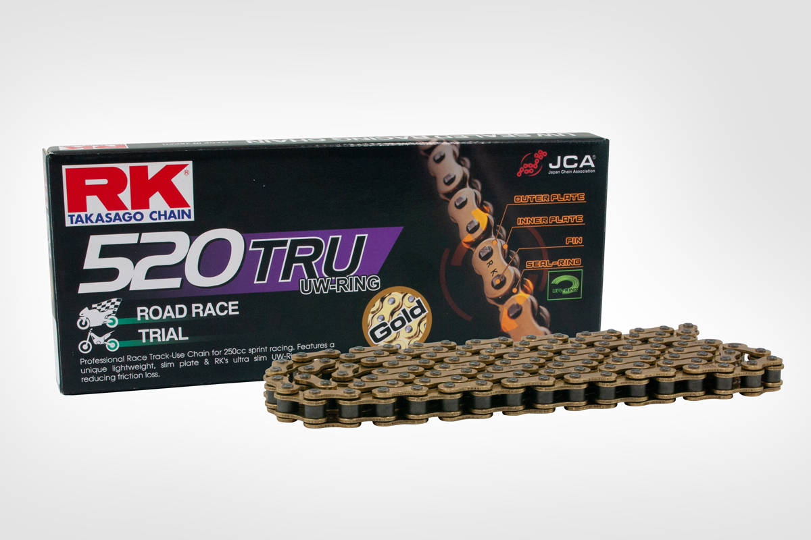

RK
RK 520 Hreliable Non-Sealed economical chain for heavy duty usage improved strength compare to standard chains. $550
$550
|
RK 420 MSreliable Non-Sealed economical chain for heavy duty usage improved strength compare to standard chains. $550 |
RK 520 TruRK’s only technology of Ultra Thin Seal, U-Rings or UW-Rings, where the thickness of seal is less than 50% of the common seal, make it possible to design a Sealed Chain with the weight of a Non-Sealed Chain. $500 |